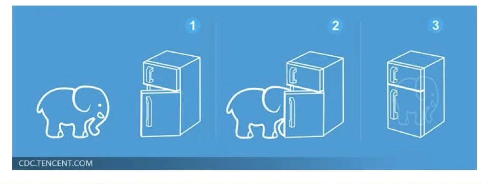
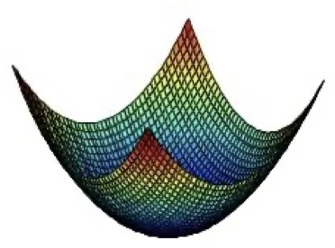

计算机视觉 · 第 5 章 前馈神经网络
5.9 优化问题与课后练习
到这里，前馈神经网络的「定义 → 损失 → 优化 → 反向传播」已经走完一遍。最后一节把整门课的主线收一下：深度学习其实就是三步；然后正面回答「为什么深层网络这么难训」——非凸优化、梯度消失、参数多到难以解释，以及它们对数据、算力、算法效率提出的要求。最后是课件留的两道编程练习。
1. 深度学习的三个步骤
课件用一页图把整门技术压成三步：定义网络 → 定义损失 → 优化（图 1）。这三个步骤分别对应前面几节的内容：网络结构决定「模型能表达什么」（5.4 节），损失函数决定「什么叫好」（5.6 节），优化算法决定「怎么一步步变好」（5.7、5.8 节）。课件在这一页上写了一句半开玩笑的话——「Deep Learning is so simple ……」，但接下来的几页就在说明，这三步里每一步都不简单。

2. 优化问题的难点与需求
课件把深度网络训练的困难归纳成四条：
- 参数过多，影响训练：参数量动辄百万级，训练慢，而且容易过拟合；
- 非凸优化问题：即存在局部最优而非全局最优解，影响迭代——梯度下降停下来时，未必是全局最好的那一点；
- 梯度消失问题：下层参数比较难调。误差从输出层往输入层回传时，靠的是激活函数导数的连乘，越往前衰减越厉害；
- 参数解释起来比较困难：训练完的权重很难用人类语言解释，模型的可解释性差。
与之对应，课件也列了三条「需求」：计算资源要大、数据要多、算法效率要好（即收敛快）。回头看 5.2 节的发展史就明白了：神经网络的两次低谷与两次复兴，正好对应这些条件在不同年代的满足情况——算力、数据、算法三样缺一不可。
3. 非凸优化
不同优化问题的「地形」不一样：
- 凸优化：局部最小值就是全局最小值。也就是说，只要梯度下降把参数带到一个不能再降的点，那一定就是最好的点；
- 非凸优化：存在多个局部最大值和局部最小值。梯度下降可能停在一个局部最优点，也可能长时间在平坦区域里挪不动。

神经网络的损失函数正是非凸的，这也是为什么实践中要在意初始化、学习率策略、批量大小这些细节——它们都在影响「会走到哪个局部区域」。
4. 梯度消失问题
梯度消失问题（Vanishing Gradient Problem）是深层网络训练困难最直接的技术原因。课件在讲 BP 算法时已经给出了它的源头——误差项的反向递推式：
δ(l) = Σj=1nl+1 δj(l+1) · wji(l+1) · f′(zi(l))
可以看到，每往前传一层，都要乘一次激活函数的导数 f′。以 Sigmoid 为例，它的导数最大值只有 0.25，绝大多数位置还远小于 0.25；几十层这样乘下来，误差项会以指数速度衰减到几乎为 0。结果是：靠近输入层的参数几乎收不到有效的梯度信号，更新极慢，网络实际上只有后面几层在学——这就是「下层参数比较难调」的确切含义。
解释这一现象正是前面几节伏笔的收束：5.1 节讲激活函数时强调「导函数的值域要在一个合适的区间内」；ReLU 正半轴导数恒为 1，所以在正区间内不会衰减，这也是它取代 Sigmoid 成为深层网络默认选择的重要原因；Swish、GELU 等平滑变体则进一步改善了负半轴的行为。要缓解梯度消失，还可以从更好的初始化、Batch Normalization、残差连接（ResNet 的 shortcut）等方向入手——这些属于后面章节的内容。
5. 课后练习
课件留了两道编程练习，都指向同一份公开代码库（nndl/exercise）的 chap4_simple neural network 目录：
- 编程练习 1：使用 NumPy 实现前馈神经网络。要求不借助深度学习框架，自己把前向传播、损失函数、反向传播与参数更新写一遍——这是检验本节内容是否真的掌握的最直接方式；
- 编程练习 2（带 * 号，难度更高）：理论和实验证明，一个两层的 ReLU 网络可以模拟任何有界闭集函数。它对应 5.4 节的通用近似定理：定理本身说的是「存在」，这里要求你亲手把那个近似过程实现出来。
本节小结
- 深度学习三步走：定义网络 → 定义损失 → 优化；分别对应「能表达什么」「什么叫好」「怎么变好」；
- 训练深度网络的四大难点：参数过多影响训练、非凸优化（存在局部最优）、梯度消失（下层参数难调）、参数难以解释；对应三项需求：算力大、数据多、算法收敛快；
- 凸优化的局部最小值即全局最小值；神经网络的损失是非凸的，存在多个局部极小，所以初始化、学习率、批量大小都会影响最终结果；
- 梯度消失来自误差反向递推中激活函数导数的连乘：Sigmoid 导数最大 0.25，逐层相乘后指数衰减，靠近输入层的参数几乎得不到更新；ReLU 在正半轴导数为 1，因此更利于深层训练；
- 课后练习：用 NumPy 从头实现前馈神经网络；并证明/实验验证两层 ReLU 网络可以模拟任何有界闭集函数。